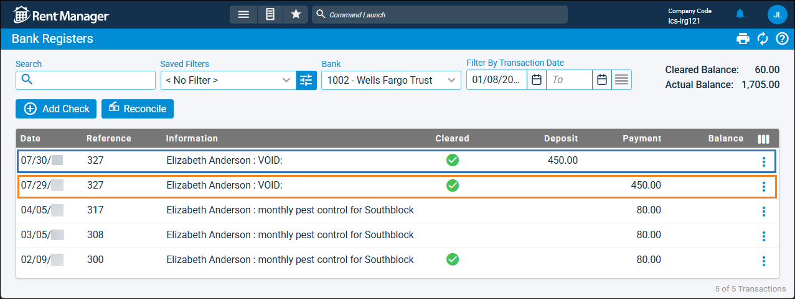

Source: https://rmxhelp.rentmanager.com/Topics/Express/KB/Checks-Reverse-Voided.htm
Reverse a Voided Check
If you have voided a check in Rent Manager that was processed in the real-world, you can reverse the void. By unvoiding the check, Rent Manager deletes the reversal check that was created when the check was voided. Once the reversal check is deleted, you can unclear the reconciled check your bank register. This allows you to reconcile the check against your real-world bank statement the next time you perform a bank reconciliation.
Warning
Please speak with your accountant about the financial implications to ensure this is the best course of action for your business.
More Information
To reverse a check that has been voided, you must have access to the associated bank account. For more information, refer to Limit Access to a Bank or Credit Card.
Related Privileges
| Group | Privilege | Column |
|---|---|---|
| Banks/Checks | View bank registers | Enabled |
| Checks | View, Edit, Delete | |
| Void Checks | Enabled | |
| Reconciled transactions | Delete |
For more information, refer to Control User Access.
Reverse the Voided Check
To unvoid the voided check, do the following:
-
Go to
 arrow_forward Accounting arrow_forward Banking arrow_forward Bank Register.
arrow_forward Accounting arrow_forward Banking arrow_forward Bank Register.
The Bank Registers page displays -
From the Bank drop-down list, select the bank account associated with the voided check.
-
For the voided check you wish to unvoid, click
 arrow_forward Unvoid.
arrow_forward Unvoid.
The Confirm Check Reversal Delete pop-up displays.More Information
The Information column for the original check and reversal check both display VOID and are written for the same amount.
Only the original check can be unvoided. The original check will have the check amount listed in the Payment column (shown in orange in the image below).

-
Click Yes, then confirm by clicking Yes again on the Delete Reconciled Transaction pop-up.
The payment reversal is deleted and the check is unvoided.More Information
If the voided check paid a bill, and if that check and bill were disconnected when the check was originally voided, the void cannot be reversed.
Unclear the Transaction from the Bank Register
Voided checks are automatically marked as cleared in your bank reconciliation. If you leave the check marked as cleared after unvoiding, it is included in the Actual Balance of the bank account and will not be included in your next reconciliation.
To unclear the check for your next reconciliation, do the following:
-
Go to
arrow_forward Accounting arrow_forward Banking arrow_forward Bank Register.
The Bank Registers page displays -
From the Bank drop-down list, select the bank account associated with the unvoided check.
-
Locate the unvoided check, then select
arrow_forward Mark as not reconciled.
This check can be cleared when the next bank reconciliation is performed.